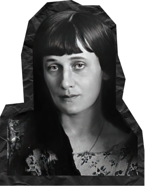

НА ГЛАВНУЮ
Анна
Ахматова


Анна
Ахматова
Анна Ахматова (1889–1966) — одна из самых значительных русских поэтесс XX века, представительница акмеизма. Она родилась 23 июня 1889 года в Одессе в семье высшего офицера. В 1906 году переехала в Санкт-Петербург, где начала активно писать стихи и знакомиться с представителями литературного мира.
В 1910-х годах она была частью литературного круга, включающего таких поэтов, как Осип Мандельштам и Николай Гумилёв, с которым она состояла в браке. После революции 1917 года Ахматова столкнулась с трудностями: её муж был расстрелян, а сын был арестован и провёл много лет в тюрьмах.
В годы сталинских репрессий её творчество подвергалось цензуре, и она не могла публиковать свои произведения. Тем не менее, Ахматова продолжала писать и оставалась символом стойкости и мужества. В 1940-х годах она написала свой знаменитый цикл «Реквием», посвящённый страданиям русского народа в годы репрессий.
После войны Ахматова получила признание как поэтесса, её творчество стало известным за пределами СССР. Она преподавала в университетах и продолжала писать до конца своей жизни. Анна Ахматова скончалась 5 марта 1966 года в Санкт-Петербурге. Её поэзия продолжает вдохновлять читателей и исследователей по всему миру.